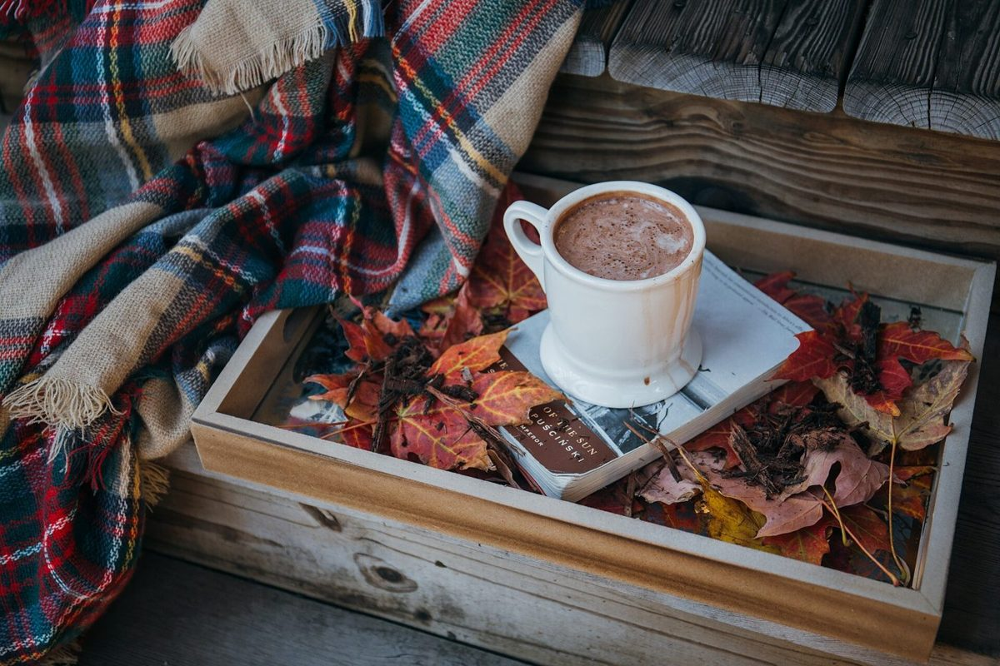
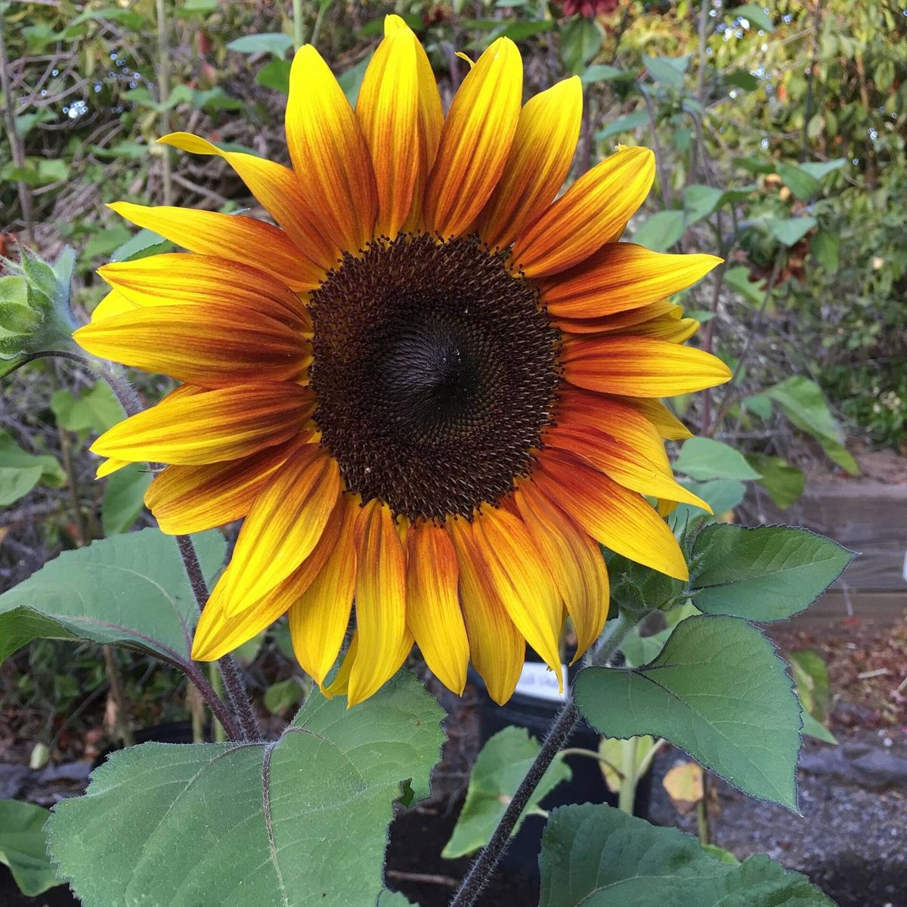

● 1 / 6画面 / ホーム

カフェ
みんなのおうち喫茶ヌック
制作側の連想
ベビーモニターの部位の配置図
屋号の由来は分かりません。制作側は、屋号の「おうち」という語から、家の中で使う機器のひとつ、ベビーモニターの親機と子機を連想しました。親機の画面・子機のカメラ・音量ダイヤル・アンテナ・電源ランプ・充電台の6つの部位を、このサイトの各ページに見立てています。制作側の連想で、お店の理念・由来とは無関係です。お店の実際の様子や提供内容を示すものでもありません。
写真のイメージ
フリー素材の写真
写真はお店や栃木市のものではありません。イメージを伝えるための、国外・撮影地不明のフリー素材です。




ご案内
お店のこと(確認できたものだけ)
| 所在地 | 〒328-0051 栃木県栃木市柳橋町３−２２ |
|---|---|
| 電話 | 準備中 |
| 営業時間 | 準備中 |
| 定休日 | 準備中 |
| ご予約 | 準備中 |
| 駐車場 | 準備中 |
| SNS | Instagram @_minnano_ouchi_ |